Chaque chapitre, une figure en 3D qu’on fait tourner, qu’on arrête et qu’on décompose
Sur chaque carte, l’année où la notion est enseignée en Chine : 初三 = 3e, 高一 = seconde, 高二 = première ou terminale, 大学 = université.
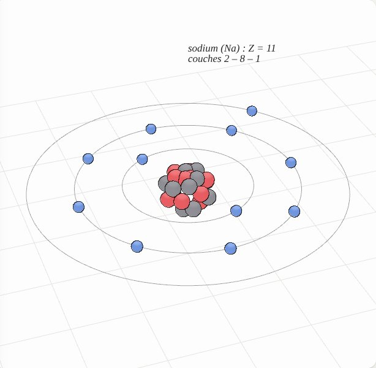
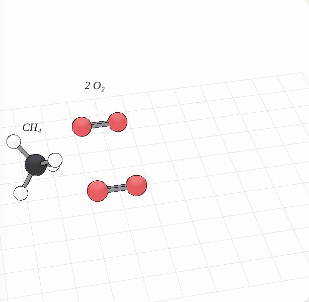
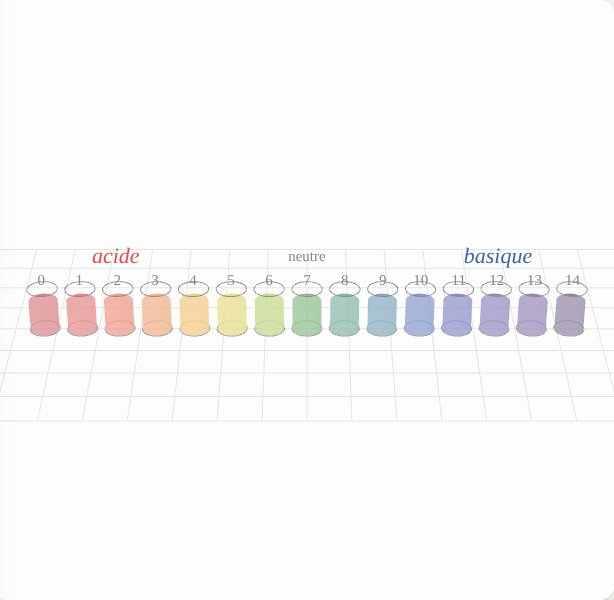
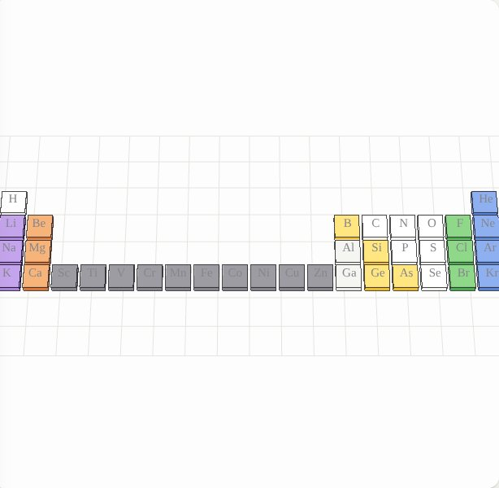
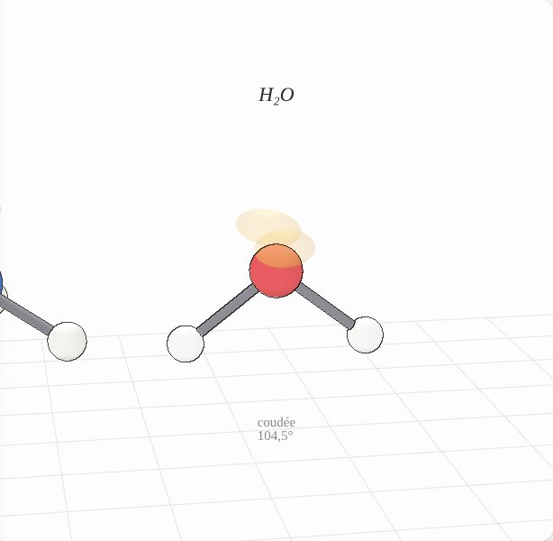
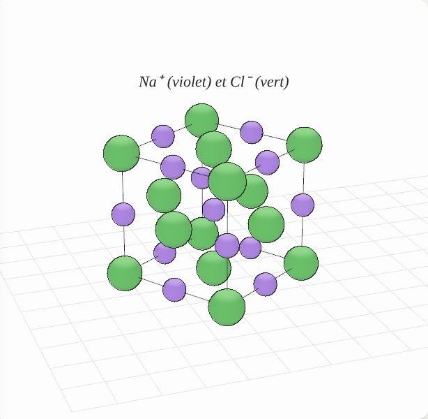
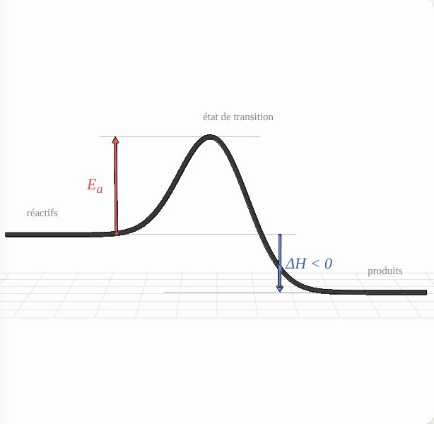
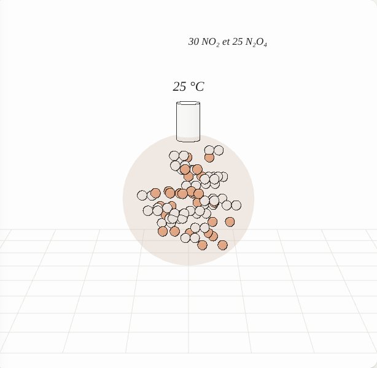
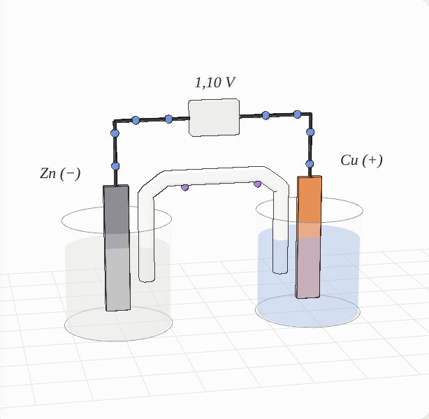
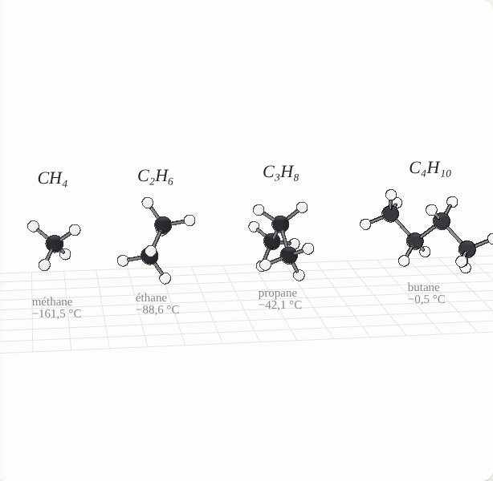
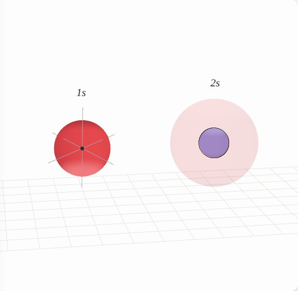
Moteur de rendu repris de Atlas of Physics (licence MIT). Contenus d’après les programmes français et les manuels chinois 人教版 (PEP).